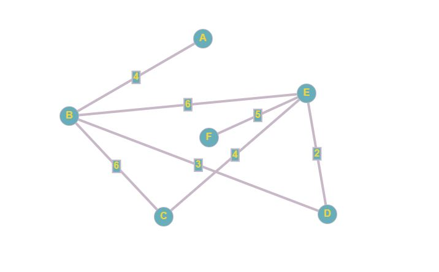

Тео́рия гра́фов — раздел дискретной математики, изучающий
свойства графов. В общем смысле граф представляется как множество
вершин (узлов), соединённых рёбрами. В строгом определении графом
называется такая пара множеств , где есть подмножество любого счётного
множества, а — подмножество .
